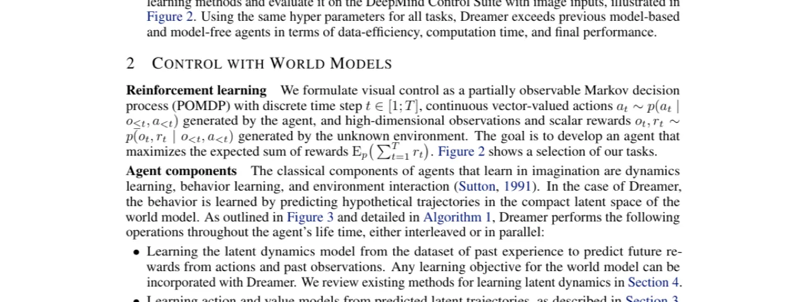
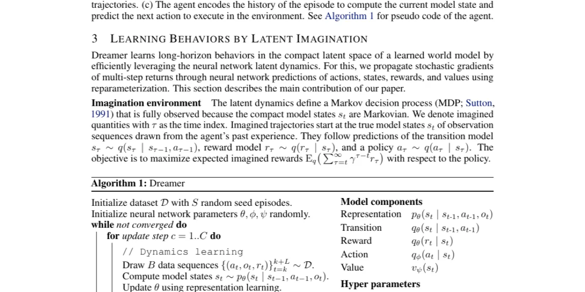
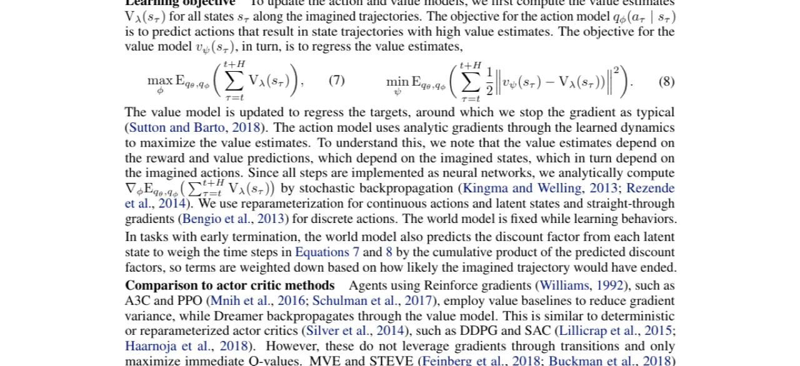
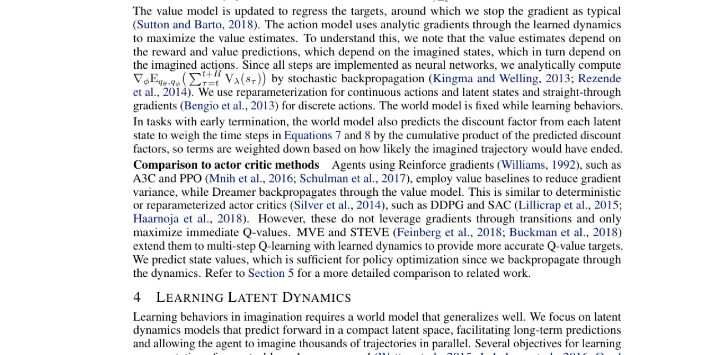

Dreamer 是一个基于世界模型的强化学习智能体，能够仅凭图像输入，通过在紧凑潜在状态空间中"想象"未来轨迹来学习复杂的长视野行为。其核心创新是将价值估计的解析梯度沿想象轨迹反向传播，从而高效训练策略，无需在真实环境中大量交互。在 20 个视觉控制任务上，Dreamer 在数据效率、计算速度和最终性能三方面均超越现有最佳方法。
从高维图像中学习复杂行为是强化学习的核心挑战。已有工作可以学习潜在动力学模型，但如何从世界模型中高效推导出行为，仍是一个开放问题。
"Learned world models summarize an agent's experience to facilitate learning complex behaviors. While learning world models from high-dimensional sensory inputs is becoming feasible through deep learning, there are many potential ways for deriving behaviors from them."
现有方法的主要缺陷在于：

Dreamer 由三个协同运作的模块构成：潜在动力学学习、在潜在空间中的行为学习，以及在真实环境中执行策略收集经验。整个行为学习过程纯粹在世界模型的潜在状态空间中完成，通过对多步价值估计的解析梯度反向传播来训练 actor 和 critic。

Dreamer 使用 RSSM 作为潜在动力学模型，包含三个关键组件：
p(st | st-1, at-1, ot) — 将观测和动作编码为紧凑的连续向量状态，具有 Markovian 转移性质。q(st | st-1, at-1) — 在不观测对应图像的情况下预测未来状态，支持在潜在空间中快速想象数千条轨迹。q(rt | st) — 从潜在状态预测奖励。世界模型通过图像重建的变分下界（ELBO）联合优化，包含图像重建项、奖励预测项和 KL 正则项。
行为学习的核心创新是在潜在空间中训练 actor 和 value 模型，不依赖真实环境交互：
qφ(aτ | sτ)，输出 tanh 变换的 Gaussian 分布，支持 reparameterized 梯度。vψ(sτ)，估计从状态 sτ 开始的期望累计奖励。Vλ(sτ) 是 N 步收益的指数加权平均，平衡偏差与方差。动作模型通过最大化价值估计来更新，梯度通过神经网络动力学解析地反向传播：
"We propagate stochastic gradients of multi-step returns through neural network predictions of actions, states, rewards, and values using reparameterization."

在 DeepMind Control Suite 的 20 个视觉控制任务上进行评估，图像输入 64×64×3，每个任务固定动作重复 R=2，每个任务运行 5 个随机种子。单块 Nvidia V100 GPU + 10 CPU 核心，每 106 环境步约 3 小时训练时间。
| 方法 | 类型 | 环境步数 | 平均得分（20 任务） |
|---|---|---|---|
| Dreamer | Model-based (latent imagination) | 5×106 | 823 |
| D4PG | Model-free (pixel input) | 108 | 786 |
| A3C | Model-free (state input) | 108 | — |
| PlaNet | Model-based (online planning) | 5×106 | 332 |
Dreamer 在使用 D4PG 20 倍更少的环境步数下，平均得分 (823) 超越 D4PG (786)。计算时间方面，Dreamer 约 3 小时/106 步，而 PlaNet 在线规划约 11 小时，D4PG 达到类似性能需约 24 小时。

在需要长期信用分配的任务（如 Acrobot Swingup、Hopper Hop）上，Dreamer 明显优于：(1) 无价值模型的 action model（仅最大化有限 horizon 内的想象奖励），(2) PlaNet 在线规划。论文报告 Dreamer 在 horizon=20 时，在 20 个任务中的 16 个超越这两种替代方案，另 4 个打平。
对比三种表示学习目标与 Dreamer 配合的效果（论文 Figure 8）：
这一消融实验表明，表示学习的未来进步很可能直接转化为 Dreamer 在更高视觉复杂度环境中的性能提升。
论文附录进一步验证 Dreamer 可扩展到离散动作（Atari）和早期终止任务（DeepMind Lab），证明方法的通用性。直通梯度（straight-through gradients）用于离散动作的梯度传播。
论文在结论中指出："Future research on representation learning can likely scale latent imagination to environments of higher visual complexity."这说明当前版本在高视觉复杂度环境（如真实世界图像、复杂光照/遮挡）中的性能尚不确定。所有实验均在 64×64×3 分辨率的仿真环境（DeepMind Control Suite）中进行。
在紧凑潜在空间中想象长达数十步的轨迹，模型误差会积累。论文通过引入价值模型部分缓解了这一问题（使策略对 horizon 长度更鲁棒），但模型精度仍是瓶颈——如实验所示，在模型难以准确建模的任务上，基于想象的学习可能失败。
"Reward prediction alone was not sufficient in our experiments."当奖励稀疏时，缺乏图像重建信号的表示模型难以学习足够丰富的状态表示，导致 Dreamer 在此配置下性能大幅下降。
Dreamer 每 106 步约需 3 小时训练时间（单块 Nvidia V100 GPU + 10 CPU 核心），虽然比 PlaNet（11 小时）快，但仍属于较重的计算开销，限制了在计算受限场景下的应用。世界模型与行为学习需要同时训练多个神经网络组件（RSSM、CNN 编解码器、actor、critic）。